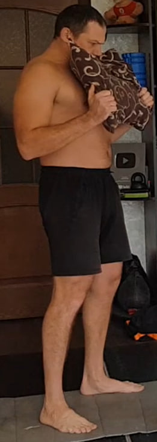
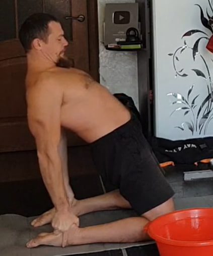
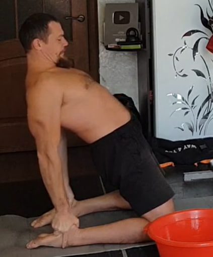
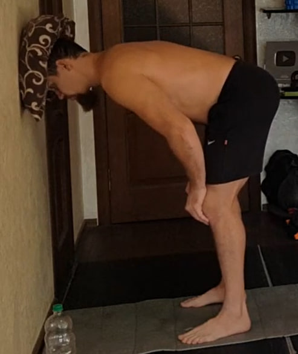
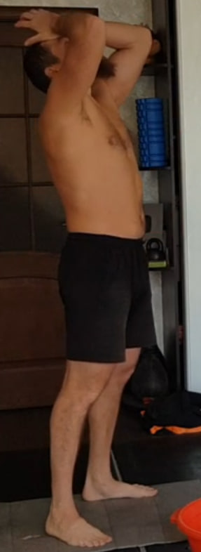
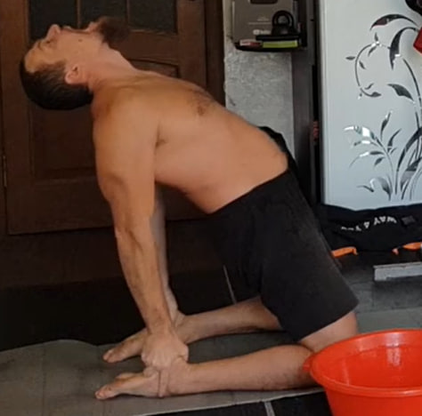

1. “Tirón de almohada” bajo la barbilla — 1×10 (10 s)
Coloca una almohada bajo la barbilla. Inclina la cabeza hacia delante para atraparla entre la barbilla y el pecho. Con las manos tira suavemente de la almohada “como si quisieras sacarla”, pero resiste apretándola más fuerte al presionar hacia abajo con la barbilla. Mantén la tensión 10 segundos.
Ejecución: 1 serie de 10 repeticiones.
2. Trasvase de agua con la boca — 2 litros
Necesitas dos recipientes. Llena uno con agua fresca y fría (hoy: 2 litros) y añade un par de cucharadas de sal. Coloca ambos recipientes uno al lado del otro.
Toma un buen trago (sin tragar), mueve la cabeza hacia el recipiente vacío y escupe con fuerza. Importante: no dejes que el agua se escurra sin control; debe salir como un chorro.
3. Extensión + “mandíbula” y barbilla al pecho — 1×10
 

Arrodíllate y siéntate sobre los pies. Reclina el torso hacia atrás y apoya las manos en los talones (si tienes la espalda rígida, ve solo hasta donde sea cómodo).
Parte A (mandíbula): en la posición de extensión, abre y cierra la boca lo más amplio posible con control, sin tirones. Con el tiempo puedes aumentar el número de repeticiones.
Parte B (barbilla al pecho): desde esa misma posición, lleva la barbilla al pecho y luego vuelve a la extensión. Mantén la tensión 10 segundos.
Ejecución: 1 serie de 10 repeticiones.
4. Isometría de cuello con mano en la frente — 1×10 (10 s)

Coloca una mano en la frente y empuja con la cabeza contra la mano, mientras la mano resiste para que no haya movimiento visible. Llega al punto de máxima resistencia y mantén 10 segundos.
Mantén la espalda recta y no aguantes la respiración.
Ejecución: 1 serie de 10 repeticiones.
5. Círculos pequeños con almohada en la cabeza — 10 + 10
Busca un punto sólido donde puedas presionar hacia arriba con una almohada sobre la cabeza (por ejemplo, bajo el marco de una puerta). Aplica solo la presión justa para mantener la almohada en su sitio.
Mantén la cabeza quieta y mueve el cuerpo (desde el cuello hacia abajo) en círculos muy pequeños.
Ejecución: 10 círculos en sentido horario + 10 en sentido antihorario.
6. “Tirón de almohada” bajo la barbilla — 1×15 (10 s)

Misma técnica que en el ejercicio 1: sujeta la almohada entre la barbilla y el pecho, tira con las manos “como si quisieras sacarla” y resiste presionando con la barbilla. Mantén 10 segundos.
Ejecución: 1 serie de 15 repeticiones.
7. Trasvase de agua con la boca — 3 litros

Igual que el ejercicio 2, pero hoy el volumen total es de 3 litros. Agua fresca y fría con un par de cucharadas de sal. Escupe con fuerza: no dejes que el agua se escurra.
8. Extensión + “mandíbula” y barbilla al pecho — 2×10


Misma técnica que en el ejercicio 3. En extensión: abre y cierra la boca con control, sin tirones. Luego barbilla al pecho y vuelve, manteniendo 10 segundos en cada repetición.
Ejecución: 2 series de 10 repeticiones.
9. Isometría de cuello con mano en la frente — 2×10 (10 s)

Misma técnica que en el ejercicio 4: mano en la frente, empuja con la cabeza hasta el punto de máxima resistencia y mantén 10 segundos.
Espalda recta y respira (no aguantes el aire).
Ejecución: 2 series de 10 repeticiones.
10. Círculos pequeños con almohada en la cabeza — 5 + 5

Misma técnica que en el ejercicio 5: presión ligera para fijar la almohada, cabeza quieta y círculos muy pequeños con el cuerpo.
Ejecución: 5 círculos en sentido horario + 5 en sentido antihorario.
11. Isometría de cuello con mano en la frente — 1×10 (10 s)
Misma técnica que en el ejercicio 4. Mantén 10 segundos por repetición, espalda recta y respiración continua.
Ejecución: 1 serie de 10 repeticiones.
12. Extensión + barbilla al pecho — 1×10

Misma técnica que en el ejercicio 3: en extensión, movimiento con control, sin tirones. Barbilla al pecho y vuelve, manteniendo 10 segundos en cada repetición.
Ejecución: 1 serie de 10 repeticiones.